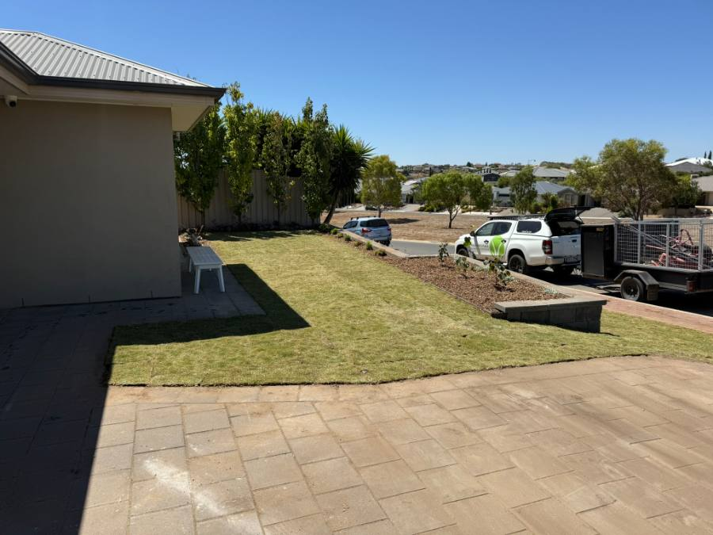

Creating a smooth, practical lawn space that enhances both the appearance and functionality of the property.
This front yard landscaping project transformed a sloped and underutilised area into a clean, level lawn designed for easy maintenance and long-term performance. Through careful site preparation, grading, and turf installation, the space was reshaped into an attractive outdoor area that complements the home and significantly improves street appeal.
The existing front yard suffered from uneven levels and lacked the structure needed to create a practical, visually appealing outdoor space.
The objective was to:
A key consideration was ensuring the new lawn worked naturally alongside the existing retaining elements, garden beds, and paved surfaces.
The project began with reshaping and levelling the site to establish a consistent surface across the entire lawn area.
Proper site preparation is critical to achieving a healthy, long-lasting lawn. Careful grading was completed to improve drainage, eliminate uneven sections, and create a smooth finish ready for turf installation.
Once the foundation was prepared, fresh turf was installed across the entire front yard. Special attention was given to integrating the lawn with existing landscape features, ensuring clean transitions around retaining walls, garden beds, and paved areas.
The result was a seamless and professional finish that immediately improved the property's appearance.
Approximately 1–2 days depending on site conditions, access, and preparation requirements.
Front yard turf installation and levelling projects of this size typically range from $4,500 to $6,000, depending on:
✔ Front yard turf installation
✔ Site levelling and grading
✔ Improved drainage performance
✔ Smooth, even lawn surface
✔ Integration with existing retaining walls
✔ Seamless connection to garden beds
✔ Enhanced street appeal
✔ Low-maintenance lawn solution
✔ Designed for long-term durability
The completed project has transformed the front yard into a neat, open, and highly functional lawn area.
The fresh turf softens the surrounding hard landscaping while creating a cleaner and more inviting appearance from the street. The improved levels make the space easier to maintain and more enjoyable to use, while the seamless integration with existing garden beds and retaining features ensures the landscape feels cohesive and balanced.
As the lawn continues to establish, the property will only improve further, providing a durable and attractive outdoor space that enhances both the home's appearance and value.

Maddern's Place provides professional turf installation, lawn preparation, site levelling, irrigation, drainage, and complete landscaping services throughout southern Adelaide.
Whether you're dealing with a sloped block, an uneven lawn, or simply want to refresh your property's appearance, we can create a professional solution tailored to your outdoor space.
Based in Hackham, we service Morphett Vale, Reynella, Hallett Cove, Happy Valley, Noarlunga, Seaford, Christies Beach and all of Adelaide's south. Free on-site quotes, no obligation.
Get a Free Quote